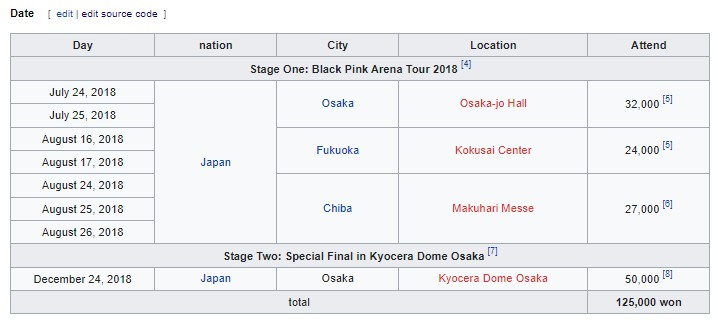
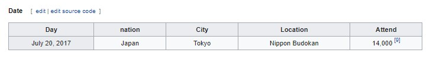
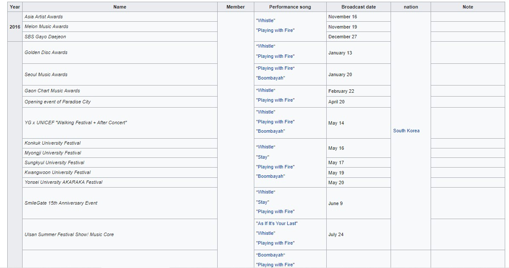
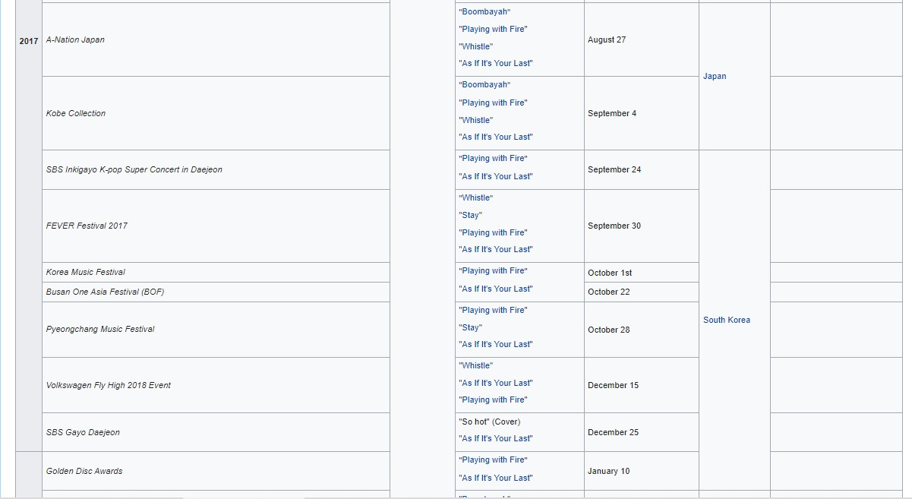
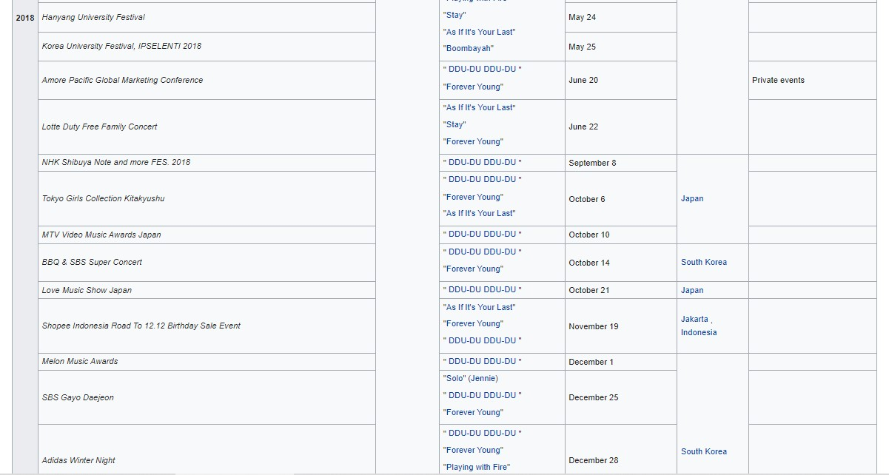
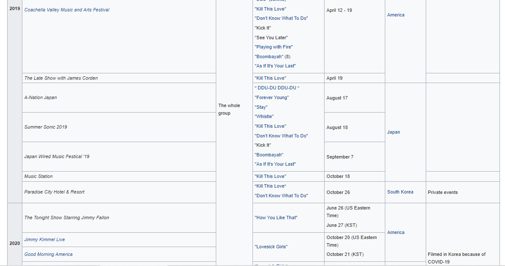
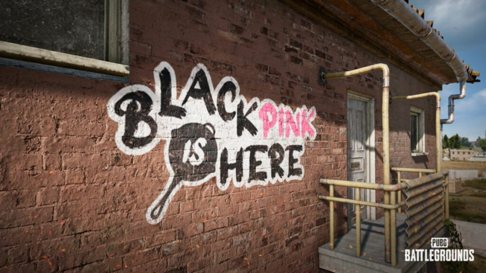
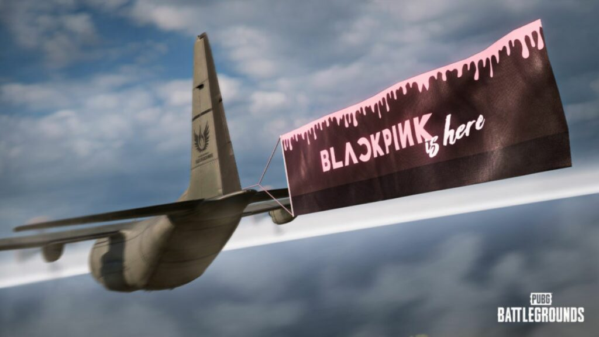
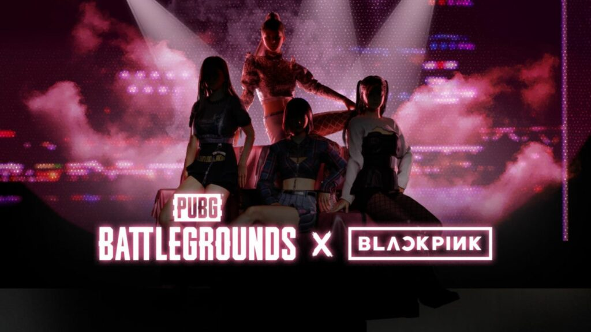

To promote their first Japanese mini album, Blackpink announced that the group will hold a concert tour in Japan. Originally 6 sessions but later added to one in Chiba due to great demand, [1] the tour officially started on July 24 in Osaka . On July 7, the tour's final stop was on December 24 at Kyocera Dome Osaka as a Christmas present for the group's fans, making the group the first foreign girl group to perform. at the dome stadium in Japan, after debuting for 1 year and 4 months.The group kicked off their first Japanese tour "Blackpink Arena Tour 2018" in Osaka on July 24-25.
Concert tour
Concerts
Blackpink Japan Premium Debut Showcase (2017)
BackgroundTo promote the group in Japan, Blackpink held a debut showcase at the legendary Nippon Budokan in front of 14,000 fans. More than 200,000 fans applied for tickets to the concert. The tracklist includes the group's previously released songs performed in Japanese and encore is the Korean version of Boombayah. The showcase was then broadcast on Japanese TV channel M-on! HD as well as the videos in the repackaged version of the group's mini album Re: Blackpink released in early 2018.
Performances in award ceremonies, TV shows and specials




BLACKPINK will appear in a special PUBG event as a streamer to interact with fans
After a successful cooperation between PUBG Mobile and the popular K-pop group BLACKPINK, recently, PUBG also announced a cooperation with 4 YG girls through the event "BLACKPINK is here".
This event will last for 1 month with a total of 38 items designed based on the group's costumes in performances and music videos. Other items such as pans, umbrellas, gun skins, etc. will also appear with BLACKPINK's signature pink and black tones.
Players can enter the store to buy cosmetic packages corresponding to each member Jennie, Lisa, Jisoo and Rosé including: hairstyle, themed outfit, nameplate, a helmet, a weapon and an emoticon. In particular, if you do not want to spend money, players can completely plow mission points to receive these items.
During the event period, players can find special quests and upon completion they will receive bonus points. Bonus points will be used to purchase items.
Besides, fans of PUBG as well as BLACKPINK can also see 4 girls transforming into live streamers to play games on Douyu app at 6 pm on August 13. Room code is: 276685.
Previously, in Fun match with Blackpink, Jisoo and Jennie also showed off their running skills in the PUBG Mobile game with their commendable shooting ability. It is known that Jisoo is an experienced "player". However, fans have yet to see Lisa and Rosé transform into gamers. Hopefully at the upcoming livestream, all 4 girls will participate and bring impressive moments when experiencing PUBG.